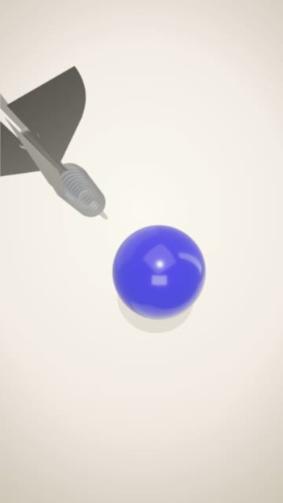
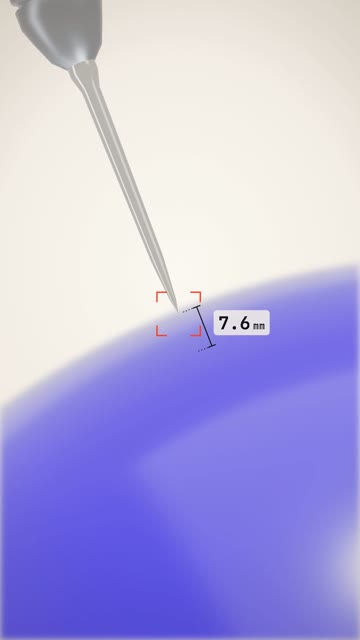
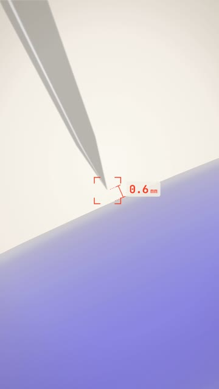
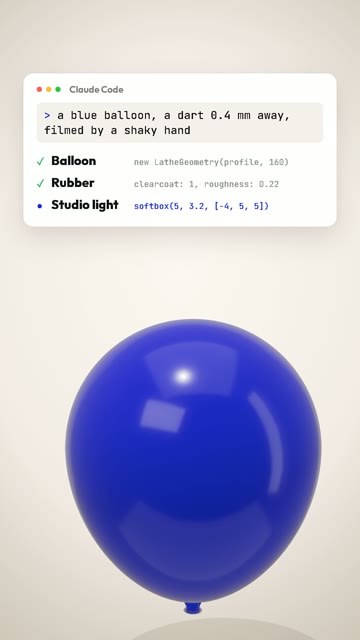
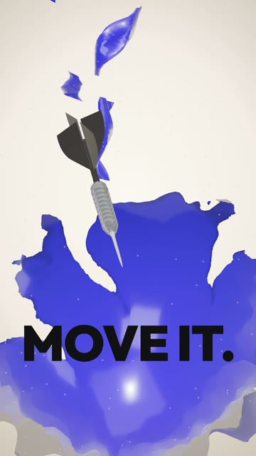

How I built a 34-second 3D showreel in Claude Code: a dart that never hits, a handheld camera with real zoom and focus, a balloon that pops in petals. No camera, no editing app. From install to a finished mp4. Windows and Mac.





A vertical 1080×1920 reel where every object, every camera move and every sound is written in code. You describe it in words. Claude builds the 3D scene, moves the camera, synthesizes the music and assembles the file.
The viewer is waiting for one thing: the pop. As long as the dart has not hit, they stay. The ruler counting down in millimetres and the focus square make the wait feel physical, like someone is really filming it.
The camera does not fly closer. It stands still and narrows the lens, like a phone zoom: the background flattens, the shake grows, focus hunts for a moment. Three jerks with a small overshoot sell it.
To see a 0.4 mm gap, the camera has to look exactly along the surface of the balloon. Then the point of impact sits on the edge of the silhouette and the gap shows against the light background.
Windows Press Win, type PowerShell, open it.
Mac Press Cmd + Space, type Terminal, open it.
Windows Paste one line at a time. Answer Y when asked.
winget install -e --id OpenJS.NodeJS.LTS winget install -e --id Git.Git winget install -e --id Python.Python.3.13 winget install -e --id Gyan.FFmpeg
Mac Homebrew first, it will ask for your password. At the end it prints two lines under “Next steps”: run them, then run the second command.
/bin/bash -c "$(curl -fsSL https://raw.githubusercontent.com/Homebrew/install/HEAD/install.sh)"
brew install node git python ffmpeg
npm install -g @anthropic-ai/claude-code
Prefer an app to a terminal? Install Claude from claude.ai/download, it has a Code tab that does the same thing.
mkdir dart-reel\ncd dart-reel\nclaude
Set up a 3D motion project in this folder. 1. Install Remotion (React 18 + TypeScript) with @remotion/three, three and @react-three/fiber. 2. Check that Python has numpy, scipy, soundfile and pyloudnorm. Install what is missing. 3. Check that ffmpeg works from the terminal. 4. Build a test composition, 1080x1920, 30 fps: one glossy sphere in three.js on a light background. Render one frame to PNG with the GL backend set to "angle" and show me the path. If something is missing, install it yourself and tell me what you installed. If something fails, find the cause and fix it.
Record these lines yourself or generate them with a text-to-speech tool. One line per file, put them in the folder.
Write one voice-over line per file, female, confident, a little playful, American English: 1. You just watched a dart not hit a balloon for seven seconds. 2. And none of it is real. 3. It's code. I asked Claude for a balloon, a dart, and a shaky hand. It wrote every line. 4. Now imagine it was your brand. People can't look away. 5. So stop waiting. 6. Move it. 7. I make brands move. Comment "dart", and I'll show you how.
Replace what is in square brackets with your own words, colours and handle. The rest can stay.
Build a 3D showreel in three.js inside Remotion. 34 seconds, 30 fps, 1080x1920, H.264 CRF 18, yuv420p. All on-screen text in English. Keep text away from the Instagram buttons (top 220 px, bottom 380 px). IDEA A dart falls toward a [blue] balloon and stops 0.4 mm before it. The viewer waits for the pop. Then I tell them none of it is real, show how it was built, and pop it on "move it". THE SCENE A glossy rubber balloon (lathe geometry, clearcoat), a steel dart with a knurled barrel and black flights, a light cream studio with soft shadow on the floor. Both made from code, no downloaded models. ONE CAMERA The camera is one continuous move. Shots must blend into each other over 20-30 frames. No jumps between shots: I see them as lag. Handheld shake measured as a share of the frame, so it looks the same on a wide lens and on a telephoto. PARTS 1. THE FALL (0-1.2 s). The dart falls from high above, spinning on its axis. The camera falls right behind the flights, looking down at the balloon growing below. No text, no voice: the picture must hook on its own. 2. THE APPROACH (1.2-7.6 s). The dart brakes like a slow-motion camera kicked in. The operator stops and zooms in with three jerky optical zooms, focus hunting after each one. A red focus square like a phone camera locks on the tip, jumps to the rubber, comes back to the gap. A ruler next to the gap shows the distance in mm, counting down to 0.4. 3. THE FREEZE (7.6-12 s). Time stops. The camera orbits around the frozen gap. Voice: "You just watched a dart not hit a balloon for seven seconds." 4. NOT REAL (12-15 s). Pull back. A scan line turns everything into wireframe from top to bottom, then the wire balloon folds back into a single profile line and the dart flies apart. 5. THE BUILD (15-22 s). A [Claude Code] window with my prompt. Step by step it rebuilds the scene: the profile spins into a balloon, grey clay turns into glossy rubber, the studio lights switch on, the dart assembles part by part, the shaky hand turns on. End with "[N] lines. 0 editing apps." 6. YOUR BRAND (22-26 s). The balloon turns and brings "YOUR BRAND" printed on it into view. "Now imagine it was your brand. People can't look away." 7. THE POP (26-31 s). "So stop waiting." Two jerky zooms back into the gap. On "Move it" the balloon pops: the tear opens in petals from the tip, the rubber wrinkles and curls back, a puff of powder, a short shockwave, a dozen big shreds. The dart rushes in, almost stops inside the bursting balloon while the camera orbits, then rushes out. 8. END CARD. "[I make brands move.]" "made with code + Claude" "Comment [DART]". TEXT No blur and no shake on text. Each line appears with opacity only. SOUND Synthesize the music in numpy, no samples: wind on the fall, a heartbeat that speeds up, zoom clicks, silence on the freeze, a bell on every build step, a riser into the pop, then a drop with an 808 and a cowbell. Mix the voice files on top, duck the music under the voice. Master to -14 LUFS for stereo. WORKFLOW 1. Create the files. Type-check must pass. 2. Render about 24 key frames into one contact sheet and look at it yourself. 3. Self-QA: text over the dart, text on a busy background, objects out of frame. Fix and re-render. 4. Render the final mp4 with sound. 5. Measure the frame-to-frame difference of the finished file with ffmpeg (tblend + signalstats) and list every spike. Every spike must be a planned zoom jerk or the pop. Anything else is a camera jump: fix it. 6. Tell me in one message: file path, what you checked and what you could not check. Do not stop until there is a finished mp4.
The first render is never the final one. Watch it and say what is wrong. These are close to the notes I actually sent:
I don't like the palette and the dark background. Keep the balloon blue, make the studio light and clean.
In the close-up, write the distance between the tip and the balloon right next to the gap.
Show how it all gets built from the inside, like a screen recording of the process.
Not enough movement, somewhere it feels laggy and somewhere it is not logical. Make the zoom more real and the pop stronger.
Remove the words at the start. The viewer should want to watch on their own: the dart should rush at the balloon from the first frame.
Make the dart fall from above and the camera fall fast right behind it. When it gets close to the balloon, the camera settles into the side view.
Similar in structure, not frame for frame: Claude writes the code from scratch each time. Change the colours, the object and the words to make it yours.
Copy it and paste it to Claude with the words “here is the error, fix it and continue”.
Yes. Swap the objects in the brief. Keep the rules: one continuous camera, a measured gap, and the build in the middle.